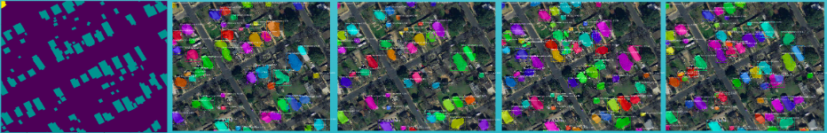

Extend and adapt baseline MaskRCNN for City of Austin overhead dataset
The City of Austin hires geographers to manually annotate objects of interest from satellite imagery of Austin, TX every other year. Not only is this process labor and resource intensive, but it is expensive as well, costing the city roughtly $500,000 per dataset that they want to create. They granted us access to three years of manually annotated data, which we converted to the MS COCO annotation format so that we could train the MaskRCNN algorithm to automatically detect and segment these objects of interest. Below are examples of models that we have trained juxtaposed to the ground truth masks on the left.
To efficiently create and evaluate our models, we developed an easy to use pipeline for MaskRCNN located at this repo. It is a toolkit that allows the user to rapidy train models by specifying what GPU they want to train on. For example, if you have 8 GPUs, you can train 8 models at the same time.
For a more in depth look at our process for this project, please refer to this presentation here. NSF REU Poster Presentation pdf.